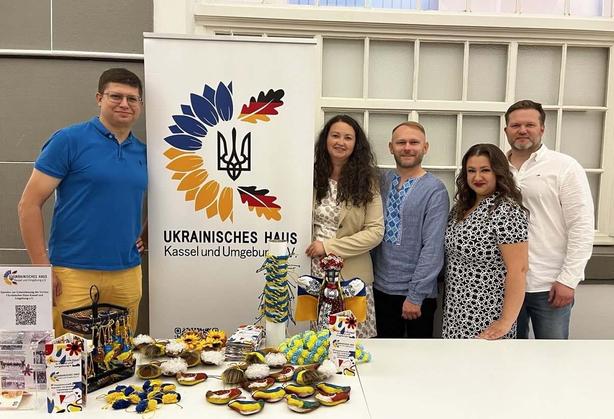

«Український дім Кассель і околиці» — громадська організація для українських родин у Касселі та регіоні. Тут раді й німецьким сусідам.
01
Збереження і популяризація українського мистецтва, традицій та творчої культурної спадщини.
02
Діти та підлітки зміцнюють звʼязок з українським корінням: мова, історія та культура, тематичні майстер-класи, освітні воркшопи і шаховий клуб.
03
Взаємопідтримка, контакти з місцевими громадами та дружні стосунки з німецькими сусідами — через тренування з юдо і баскетболу, благодійні забіги та спільні ініціативи.
Ми працюємо на волонтерських засадах, з відкритими дверима і двома мовами. Хто тільки приїхав до Касселя — знайде тут людей, які цей шлях уже пройшли; хто живе давно — частинку дому.
